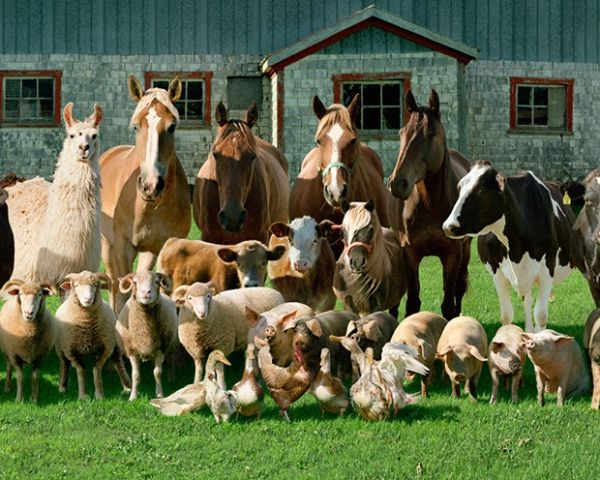

Diseases Information Collection Base
Add New Disease
:Prevention is the cornerstone of livestock health. Through early detection and regular care, we ensure the well-being of animals and the sustainability of farming. Healthy animals are the backbone of a thriving farm. By preventing disease, we not only protect livestock but also the livelihoods of farmers. When it comes to livestock health, prevention is more cost-effective than cure. Early intervention and proper care make all the difference. A healthy farm starts with healthy animals. Regular vaccination, sanitation, and nutrition are the keys to preventing disease. Disease prevention in livestock is an investment in the future of farming. By taking proactive measures, we ensure healthier animals and more productive farms.
|  |  |
 |
 |
 |
 |
Watch the Video: Understanding Livestock Diseases
This video provides an introduction to livestock diseases, how they impact animal health, and the importance of early detection and management. Learn more about common diseases, their symptoms, and effective treatments that can help farmers protect their livestock.